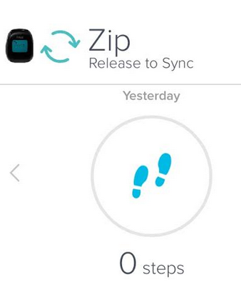
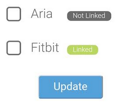
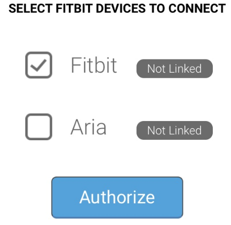
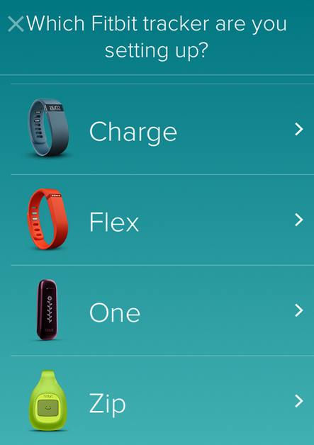

Physical Activity and Tracking: Fitbit
Note: The Fitbit steps do not update live to the HealthSlate app and there is a delay with the steps updating. The steps should catch up by the end of the day.
- Confirm your steps are syncing from your Fitbit tracker to the Fitbit app.
- Ensure your Bluetooth is enabled. Open your Fitbit app and swipe down on the Fitbit home screen to sync the steps from your Fitbit device to the Fitbit app. 
- If your Fitbit steps do not sync to the Fitbit app, navigate to: Fitbit support.
- If your steps display from your Fitbit app but do not display from the HealthSlate app, de-authorize and re-authorize your Fitbit device from the HealthSlate app.
- From the HealthSlate home screen:
- iOS device: select More

- Android device: select the menu
 icon in the top left corner of the screen.
icon in the top left corner of the screen. - Select Settings.
- Select Manage Device Sync.
- Select Manage Fitbit devices.
- Select the box next to Fitbit to remove the check mark and select Update. 
- Select Manage Fitbit devices.
- Check the box next to Fitbit and select Authorize. 
- Enter your email and password that you used with your Fitbit app and select Log in, to confirm the authorization process.
- If the above solutions do not resolve your issue, please contact HealthSlate tech support.


- Download and install the Fitbit app on your phone. Ensure Bluetooth is enabled.
- Sync your Fitbit device to the Fitbit app, please select Account from the home screen of your Fitbit app.
- Select Set Up a Device.
- Select the Fitbit device you have. Ensure Bluetooth is enabled. 
Note: For any further assistance setting up your Fitbit device or account, please Contact Fitbit Support
- Fitbit has a quick article on how to setup your Fitbit device on their website: https://help.fitbit.com. Select the link and scroll down, you'll see directions for setting up your Fitbit with phones, tablets, Windows computers and a MAC.
- From the HealthSlate app home screen:
- iOS device: select More
- Android device: select the menu icon in the top left corner of the screen.
- Select Settings.
- Select Manage Device Sync.
- Select Manage Fitbit devices.
- Check the box next to Fitbit and select Authorize.
- Enter your email and password that you used with your Fitbit app and select Log in, to confirm the authorization process.
For any further assistance setting up your Fitbit device or account, please Contact Fitbit Support